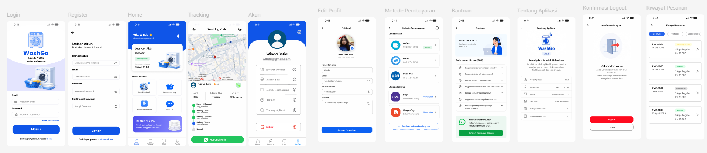
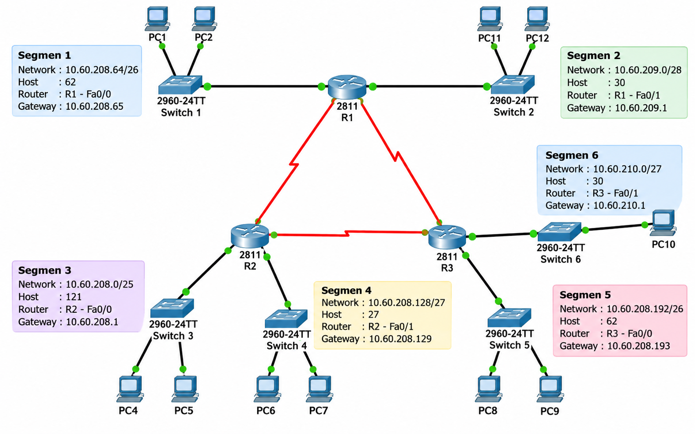

Portofolio
Desain UI/UX Aplikasi WashGo

Merancang desain antarmuka aplikasi WashGo, yaitu aplikasi layanan laundry yang ditujukan untuk mahasiswa.
Proyek ini dikerjakan secara berkelompok menggunakan Figma.
Mata Kuliah: Interaksi Manusia dan Komputer
Tools: Figma
Jenis: Kerja Kelompok - UI/UX Design
Tugas UAS Keamanan Komputer

Merancang topologi jaringan komputer sebagai tugas UAS mata kuliah Keamanan Komputer yang dikerjakan secara berkelompok.
Proyek ini menggunakan Cisco Packet Tracer untuk membuat dan menghubungkan beberapa segmen jaringan, router, switch, dan komputer.
Mata Kuliah: Keamanan Komputer
Tools: Cisco Packet Tracer
Jenis: Tugas UAS - Kerja Kelompok
Website Profil Pribadi
Membuat website profil pribadi menggunakan HTML dan CSS sebagai tugas perkuliahan.
Website berisi informasi diri, pendidikan, dan portofolio.
Tools: HTML, CSS, GitHub
Jenis: Tugas Perkuliahan